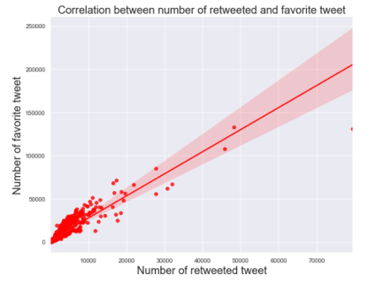

Report: Twitter Analysis for WeRateDogs
A blog on Dog Breed Rating
My journey into data wrangling began when I enrolled in Udacity as a scholar for a Data Analyst Nanodegree Program. I was fortunate to be given scholarship by Udacity and I am very grateful for the opportunity. My second project which is mainly on data wrangling had helped me gather skills in gathering, scraping and sourcing data from various sources such as the internet, databases to mention a few. In particular, I have learnt that data wrangling is in three stages which are gathering, assessing and cleaning of data. Meanwhile, in cleaning data, I learnt to be on the lookout for data quality issues and tidiness issues. Once these issues are solved, the wrangling process is completed for further analysis and visualization.
So, the question is what is Data Wrangling?
Data wrangling is the process of gathering data, assessing its quality and structure, and cleaning it before things like analysis, visualization, or build predictive models using machine learning are done.
In this project (which is my second project), the tweet archive of Twitter user @dog_rates, also known as WeRateDogs was gathered from Twitter archive and Udacity classroom.
WeRateDogs is a Twitter account that rates people's dogs with a humorous comment about the dog. These ratings almost always have a rating denominator of 10. The numerators are usually always greater than 10 such as 11/10, 12/10, 13/10, etc. This is because they are good dogs. WeRateDogs has over 4 million followers and has received international media coverage.
Sit back and relax as I take you step by step on how I wrangled the data gathered on WeRateDogs tweet.
First, python libraries and packages that will be needed for the wrangling were imported
Meanwhile, the data employed in this wrangling process were gathered from three distinct datasets. They include
1. The Twitter Archive dataset of WeRateDogs: The WeRateDogs twitter archive data was downloaded from the Udacity classroom and loaded into a dataframe. WeRateDogs downloaded their Twitter archive and sent it to Udacity via email exclusively for you to use in this project. This archive contains basic tweet data (tweet ID, timestamp, text, etc.) for all 5000+ of their tweets as they stood on August 1, 2017.
2. Image Predictions File: This file contain images in the WeRateDogs Twitter archive, ran through a neural network that can classify breeds of dogs. The file (image_predictions.tsv) is hosted on Udacity's servers and was downloaded programmatically using the Requests library and the following “https://d17h27t6h515a5.cloudfront.net/topher/2017/August/599fd2ad_image-predictions/image-predictions.tsv”. Subsequently, the file was loaded into a dataframe.
3. Tweet's retweet count and favorite count from JSON file: The first method I employed to gather each tweet's retweet count and favorite ("like") count at the minimum and any additional data was using the tweet IDs in the WeRateDogs Twitter archive. Then, I queried the Twitter API for each tweet's JSON data using Python's Tweepy library and store each tweet's entire set of JSON data in a file called tweet_json.txt file. Each tweet's JSON data was written to its own line. Thereafter, the .txt file was read line by line into a pandas DataFrame with (at minimum) tweet ID, retweet count, and favorite count.
Meanwhile, the Twitter API is one that requires users to be authorized to use it. This means that before I can run my API querying code, I need to set up my own Twitter application to be granted access to the tweeter's retweet and favorite counts by Twittter. In light of this, I created a Twitter developer account to be given the "consumer key, consumer secret, access token and access secret".
After several re-run of my kernel, my twitter developer account was suspended which prevented me from assessing the data from the twitter website. This was when I opted for the second option provided in the classroom by Udacity. In my Udacity classroom project page, I downloaded the twitter_api.py and the tweet_json.txt.
Twitter_api.py: This is the Twitter API code to gather some of the required data for the project.This was copied and pasted in my notebook.
Tweet_json.txt: This is the resulting data from twitter_api.py. I read this tweet_json.txt file line by line into a pandas DataFrame with (at minimum) tweet ID, retweet count, and favorite count."
With this information, additional data such as “retweet count and favorite count” were obtained from the tweet_json.txt. The retweet count and favorite count extracted were loaded into to a dataframe.
Assessing Data
The three datasets were assessed to detect the quality issues and tidiness issues. Various functions were also employed to understand the structure of the datasets.
Quality issues: Dirty data which has issues with its content is often called low-quality data and can include things like inaccurate data, corrupted data, and duplicate data.
Tidiness issues: Messy data has issues with its structure. It is often referred to as untidy.
· Tidy data means each variable forms a column, each observation forms a row and each type of observational unit forms a table. Any other arrangement is messy.
After assessing the three datasets both visually and programmatically, 10 quality issues and 2 tidiness issues were observed. These are well documented in my notebook titled "wrangle_act.ipynb".
Cleaning the Data
Regarding the cleaning of the assessed data, the cleaning of the issues described above were carried out in three steps namely: define, code and test.
Define: The first step is to define a data cleaning plan in writing by converting my assessments into cleaning tasks and writing little how-to guides. This plan also serves as documentation so that my work can be reproduced.
Code: Secondly, I converted my definitions into executable code. In other words, I translated those words to code and actually ran it.
Test: Finally, I tested my dataset often using code to make sure my cleaning code worked. This is like a revisiting the assessed step.
Storing the Data
The next step is to save the gathered, assessed, and cleaned master dataset to a “csv” file named "twitter_archive_master.csv". Prior to this, the three datasets were merged using a common column called the "tweet_id".
Analyzing and Visualizations
In this step, the stored data was analyzed to obtain insights into the wrangled WeRateDogs Twitter data. To achieve this, some pertinent questions were asked. Some of these questions include:
1. Which breed of dog is the most predicted in the image of the tweet?
From the statistics and the graphical representation above, the most predicted dog breed in the image tweet is the “Golden Retriever”
2. Which image number (numbered 1 to 4) corresponds to the most confident dog breed prediction?
The image number that corresponds to the most confident prediction is image number 1.
3. What rating is given by most tweeters for the WeRateDogs tweet?
The rating given by most tweeters is 12/10
4. What is the most popular source from which tweeters tweeted WeRateDogs tweet from?
The most popular source from which tweeters tweeted is Twitter for iPhone. They follow the order: Twitter for iphone > Twitter Web Client > and finally TweetDeck.
5. What is the most popular dog stage according to the neural network’s image prediction ?
According to the neural network’s image prediction, the most popular dog stage is the "pupper". The reason for this stage of dog being the most predicted could be because of the following:
· They are easier to manage and very easy to walk with.
· They are usually very cute with less hassle.
· They are much more friendly than bigger dogs and easy to cuddle with.
· One can be very creative with them such as dressing them up.
The frequency of these dog stage follows the order Pupper > Doggo > Puppo. Pupper is a small doggo, usually younger and they can be equally or more matured than “doggo”.
6. Which of the "WeRateDogs" tweet is the most retweeted by the tweeters?

The most reweeted WeRateDogs tweet by the tweeters is "Here's a doggo realizing you can stand in a pool". It was rated 13/10 and sent from Twitter for iPhone.
7. Which of the "WeRateDogs" tweet is the most favorite by the tweeters?
The most favorite tweet of the WeRateDogs tweeted by the tweeters is "Here's a super supportive puppo participating in the Toronto #WomensMarch today". It was rated 13/10 and sent from Twitter for iPhone.
8. Does the most favorite tweet connotes to the most tweet retweeted and is the most retweeted tweet the the most favorite tweet by the tweeters?

The most favorite tweet is still retweeted by the tweeters although not the most retweeted and the most retweeted tweet is still one of the favorite tweet although not the most favorite. It can then be observed visually that there is a positive correlation between the number of retweeted tweet and the number of favorite tweet.
9. What period of time does the tweeting and retweeting of the WeRateDogs tweet last for?
The period of time in which the tweeting and retweeting of the WeRateDogs tweet lasted is between the 15th of November 2015 to 1st of August 2017.
In conclusion, the data wrangling of tweet archive of Twitter user @dog_rates, also known as WeRateDogs has been carried out in a jupyter notebook. The three datasets employed in this project was gathered from Twitter archive and Udacity classroom. Thereafter, the datasets were assessed for quality and tidiness issues. Then, the issues were cleaned using the appropriate codes. It should be noted that the cleaning process of each issue assessed was documented following the Define-Code-Test format. Subsequently, the cleaned datasets were merged, save and stored for further exploration (analysis and visualization).
At the end of this project, three files were submitted. The first is the jupyter notebook (wrangle_act.ipynb) containing the code for gathering, assessing, cleaning, analyzing, and visualizing data. The file is to be framed as an internal document. The second is the wrangle_report describing my wrangling efforts. Finally, the act_report document all the insights and displays the visualization(s) produced from your wrangled data. This report is framed as an external document.
I hope you enjoyed the ride from the beginning to the end. I also hope you were able to learn something new about data wrangling as I have too.
Is it exciting to you?
Let me know what you think about it.
I can be reached via e-mail on adejokeogunlana@gmail.com